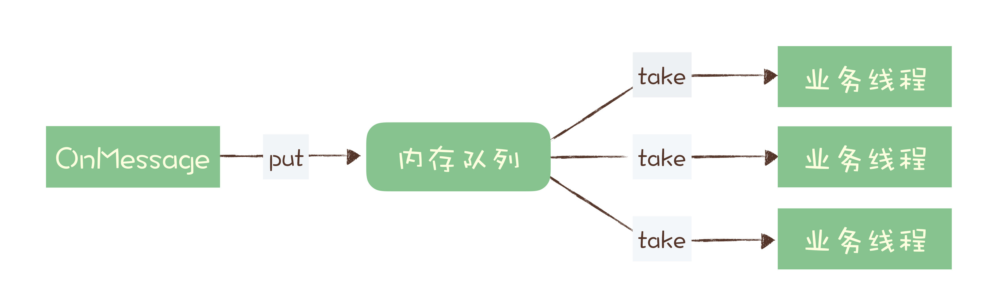

- 00 开篇词 优秀的程序员，你的技术栈中不能只有“增删改查”.md.html
- 00 预习 怎样更好地学习这门课？.md.html
- 01 为什么需要消息队列？.md.html
- 02 该如何选择消息队列？.md.html
- 03 消息模型：主题和队列有什么区别？.md.html
- 04 如何利用事务消息实现分布式事务？.md.html
- 05 如何确保消息不会丢失.md.html
- 06 如何处理消费过程中的重复消息？.md.html
- 07 消息积压了该如何处理？.md.html
- 08 答疑解惑（一） 网关如何接收服务端的秒杀结果？.md.html
- 09 学习开源代码该如何入手？.md.html
- 10 如何使用异步设计提升系统性能？.md.html
- 11 如何实现高性能的异步网络传输？.md.html
- 12 序列化与反序列化：如何通过网络传输结构化的数据？.md.html
- 13 传输协议：应用程序之间对话的语言.md.html
- 14 内存管理：如何避免内存溢出和频繁的垃圾回收？.md.html
- 15 Kafka如何实现高性能IO？.md.html
- 16 缓存策略：如何使用缓存来减少磁盘IO？.md.html
- 17 如何正确使用锁保护共享数据，协调异步线程？.md.html
- 18 如何用硬件同步原语（CAS）替代锁？.md.html
- 19 数据压缩：时间换空间的游戏.md.html
- 20 RocketMQ Producer源码分析：消息生产的实现过程.md.html
- 21 Kafka Consumer源码分析：消息消费的实现过程.md.html
- 22 Kafka和RocketMQ的消息复制实现的差异点在哪？.md.html
- 23 RocketMQ客户端如何在集群中找到正确的节点？.md.html
- 24 Kafka的协调服务ZooKeeper：实现分布式系统的“瑞士军刀”.md.html
- 25 RocketMQ与Kafka中如何实现事务？.md.html
- 26 MQTT协议：如何支持海量的在线IoT设备.md.html
- 27 Pulsar的存储计算分离设计：全新的消息队列设计思路.md.html
- 28 答疑解惑（二）：我的100元哪儿去了？.md.html
- 29 流计算与消息（一）：通过Flink理解流计算的原理.md.html
- 30 流计算与消息（二）：在流计算中使用Kafka链接计算任务.md.html
- 31 动手实现一个简单的RPC框架（一）：原理和程序的结构.md.html
- 32 动手实现一个简单的RPC框架（二）：通信与序列化.md.html
- 33 动手实现一个简单的RPC框架（三）：客户端.md.html
- 34 动手实现一个简单的RPC框架（四）：服务端.md.html
- 35 答疑解惑（三）：主流消息队列都是如何存储消息的？.md.html
- 加餐 JMQ的Broker是如何异步处理消息的？.md.html
- 结束语 程序员如何构建知识体系？.md.html
07 消息积压了该如何处理？
你好，我是李玥。这节课我们来聊一聊关于消息积压的问题。
据我了解，在使用消息队列遇到的问题中，消息积压这个问题，应该是最常遇到的问题了，并且，这个问题还不太好解决。
我们都知道，消息积压的直接原因，一定是系统中的某个部分出现了性能问题，来不及处理上游发送的消息，才会导致消息积压。
所以，我们先来分析下，在使用消息队列时，如何来优化代码的性能，避免出现消息积压。然后再来看看，如果你的线上系统出现了消息积压，该如何进行紧急处理，最大程度地避免消息积压对业务的影响。
优化性能来避免消息积压
在使用消息队列的系统中，对于性能的优化，主要体现在生产者和消费者这一收一发两部分的业务逻辑中。对于消息队列本身的性能，你作为使用者，不需要太关注。为什么这么说呢？
主要原因是，对于绝大多数使用消息队列的业务来说，消息队列本身的处理能力要远大于业务系统的处理能力。主流消息队列的单个节点，消息收发的性能可以达到每秒钟处理几万至几十万条消息的水平，还可以通过水平扩展 Broker 的实例数成倍地提升处理能力。
而一般的业务系统需要处理的业务逻辑远比消息队列要复杂，单个节点每秒钟可以处理几百到几千次请求，已经可以算是性能非常好的了。所以，对于消息队列的性能优化，我们更关注的是，在消息的收发两端，我们的业务代码怎么和消息队列配合，达到一个最佳的性能。
1. 发送端性能优化
发送端业务代码的处理性能，实际上和消息队列的关系不大，因为一般发送端都是先执行自己的业务逻辑，最后再发送消息。如果说，你的代码发送消息的性能上不去，你需要优先检查一下，是不是发消息之前的业务逻辑耗时太多导致的。
对于发送消息的业务逻辑，只需要注意设置合适的并发和批量大小，就可以达到很好的发送性能。为什么这么说呢？
我们之前的课程中讲过 Producer 发送消息的过程，Producer 发消息给 Broker，Broker 收到消息后返回确认响应，这是一次完整的交互。假设这一次交互的平均时延是 1ms，我们把这 1ms 的时间分解开，它包括了下面这些步骤的耗时：
- 发送端准备数据、序列化消息、构造请求等逻辑的时间，也就是发送端在发送网络请求之前的耗时；
- 发送消息和返回响应在网络传输中的耗时；
- Broker 处理消息的时延。
如果是单线程发送，每次只发送 1 条消息，那么每秒只能发送 1000ms / 1ms * 1 条 /ms = 1000 条 消息，这种情况下并不能发挥出消息队列的全部实力。
无论是增加每次发送消息的批量大小，还是增加并发，都能成倍地提升发送性能。至于到底是选择批量发送还是增加并发，主要取决于发送端程序的业务性质。简单来说，只要能够满足你的性能要求，怎么实现方便就怎么实现。
比如说，你的消息发送端是一个微服务，主要接受 RPC 请求处理在线业务。很自然的，微服务在处理每次请求的时候，就在当前线程直接发送消息就可以了，因为所有 RPC 框架都是多线程支持多并发的，自然也就实现了并行发送消息。并且在线业务比较在意的是请求响应时延，选择批量发送必然会影响 RPC 服务的时延。这种情况，比较明智的方式就是通过并发来提升发送性能。
如果你的系统是一个离线分析系统，离线系统在性能上的需求是什么呢？它不关心时延，更注重整个系统的吞吐量。发送端的数据都是来自于数据库，这种情况就更适合批量发送，你可以批量从数据库读取数据，然后批量来发送消息，同样用少量的并发就可以获得非常高的吞吐量。
2. 消费端性能优化
使用消息队列的时候，大部分的性能问题都出现在消费端，如果消费的速度跟不上发送端生产消息的速度，就会造成消息积压。如果这种性能倒挂的问题只是暂时的，那问题不大，只要消费端的性能恢复之后，超过发送端的性能，那积压的消息是可以逐渐被消化掉的。
要是消费速度一直比生产速度慢，时间长了，整个系统就会出现问题，要么，消息队列的存储被填满无法提供服务，要么消息丢失，这对于整个系统来说都是严重故障。
所以，我们在设计系统的时候，一定要保证消费端的消费性能要高于生产端的发送性能，这样的系统才能健康的持续运行。
消费端的性能优化除了优化消费业务逻辑以外，也可以通过水平扩容，增加消费端的并发数来提升总体的消费性能。特别需要注意的一点是，**在扩容 Consumer 的实例数量的同时，必须同步扩容主题中的分区（也叫队列）数量，确保 Consumer 的实例数和分区数量是相等的。**如果 Consumer 的实例数量超过分区数量，这样的扩容实际上是没有效果的。原因我们之前讲过，因为对于消费者来说，在每个分区上实际上只能支持单线程消费。
我见到过很多消费程序，他们是这样来解决消费慢的问题的：

它收消息处理的业务逻辑可能比较慢，也很难再优化了，为了避免消息积压，在收到消息的 OnMessage 方法中，不处理任何业务逻辑，把这个消息放到一个内存队列里面就返回了。然后它可以启动很多的业务线程，这些业务线程里面是真正处理消息的业务逻辑，这些线程从内存队列里取消息处理，这样它就解决了单个 Consumer 不能并行消费的问题。
这个方法是不是很完美地实现了并发消费？请注意，这是一个非常常见的错误方法！ 为什么错误？因为会丢消息。如果收消息的节点发生宕机，在内存队列中还没来及处理的这些消息就会丢失。关于“消息丢失”问题，你可以回顾一下我们的专栏文章《05 | 如何确保消息不会丢失？》。
消息积压了该如何处理？
还有一种消息积压的情况是，日常系统正常运转的时候，没有积压或者只有少量积压很快就消费掉了，但是某一个时刻，突然就开始积压消息并且积压持续上涨。这种情况下需要你在短时间内找到消息积压的原因，迅速解决问题才不至于影响业务。
导致突然积压的原因肯定是多种多样的，不同的系统、不同的情况有不同的原因，不能一概而论。但是，我们排查消息积压原因，是有一些相对固定而且比较有效的方法的。
能导致积压突然增加，最粗粒度的原因，只有两种：要么是发送变快了，要么是消费变慢了。
大部分消息队列都内置了监控的功能，只要通过监控数据，很容易确定是哪种原因。如果是单位时间发送的消息增多，比如说是赶上大促或者抢购，短时间内不太可能优化消费端的代码来提升消费性能，唯一的方法是通过扩容消费端的实例数来提升总体的消费能力。
如果短时间内没有足够的服务器资源进行扩容，没办法的办法是，将系统降级，通过关闭一些不重要的业务，减少发送方发送的数据量，最低限度让系统还能正常运转，服务一些重要业务。
还有一种不太常见的情况，你通过监控发现，无论是发送消息的速度还是消费消息的速度和原来都没什么变化，这时候你需要检查一下你的消费端，是不是消费失败导致的一条消息反复消费这种情况比较多，这种情况也会拖慢整个系统的消费速度。
如果监控到消费变慢了，你需要检查你的消费实例，分析一下是什么原因导致消费变慢。优先检查一下日志是否有大量的消费错误，如果没有错误的话，可以通过打印堆栈信息，看一下你的消费线程是不是卡在什么地方不动了，比如触发了死锁或者卡在等待某些资源上了。
小结
这节课我们主要讨论了 2 个问题，一个是如何在消息队列的收发两端优化系统性能，提前预防消息积压。另外一个问题是，当系统发生消息积压了之后，该如何处理。
优化消息收发性能，预防消息积压的方法有两种，增加批量或者是增加并发，在发送端这两种方法都可以使用，在消费端需要注意的是，增加并发需要同步扩容分区数量，否则是起不到效果的。
对于系统发生消息积压的情况，需要先解决积压，再分析原因，毕竟保证系统的可用性是首先要解决的问题。快速解决积压的方法就是通过水平扩容增加 Consumer 的实例数量。